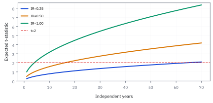
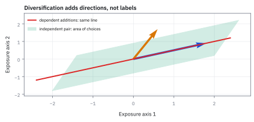
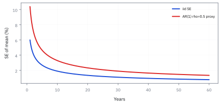

3.2 Linear Independence and Linear Combinations
รู้ได้อย่างไรว่าทิศทางหนึ่งสร้างจากทิศทางอื่น
มีสูตรน้ำผลไม้สองสูตร: สูตรแรกใช้ส้ม 1 กับมะนาว 0 สูตรสองใช้ส้ม 2 กับมะนาว 0 คุณได้รสทิศใหม่จริงหรือแค่สูตรแรกสองแก้ว?
เฉลย: สูตรสองเป็นสองเท่าของสูตรแรก จึงสร้างสิ่งใหม่ไม่ได้; แต่สูตรที่มีมะนาวเพิ่มเปิดทางให้ผสมรสอื่น
Linear combination คือการคูณแล้วบวก vector หลายตัว ส่วน linear independence ตรวจว่าไม่มีตัวใดสร้างจากตัวอื่นได้ สูตรซ้ำเพียงเปิดไมค์เดิมดังขึ้น; งานจริงใช้กัน factor ซ้ำก่อนสร้าง model
ศัพท์ที่ใช้ในหัวข้อนี้
- linear combination
- การเอา vector หลายตัวมาคูณด้วยจำนวนจริงแล้วบวกกัน ใช้สร้าง portfolio หรือ hedge ใหม่จาก building blocks ที่มีอยู่
- linear independence
- สถานะที่ไม่มี vector ตัวใดเขียนเป็น linear combination ของตัวอื่นได้ ใช้ตรวจว่า trade ใหม่เพิ่มทิศ risk ใหม่จริง ไม่ใช่ exposure เดิมที่ถูกคูณขนาด
- span
- เซตของ vector ทุกตัวที่สร้างได้จาก linear combination ของชุดตั้งต้น ใช้บอกขอบเขต exposure ที่ desk สร้างหรือ hedge ได้จาก instruments ที่ถือ
- hedge
- position ที่ตั้งใจให้ชดเชยความเสี่ยงของ position อื่น ใช้ลด sensitivity ต่อการเคลื่อนไหวที่ไม่อยากรับ ไม่ใช่แค่เพิ่มจำนวน ticker
- diversification
- การรวม risk drivers ที่ไม่เคลื่อนพร้อมกันทั้งหมด ใช้ลดความผันผวนของ portfolio โดยไม่จำเป็นต้องลดเงินลงทุนทุกดอลลาร์
- factor exposure
- ความไวของ portfolio ต่อ driver ร่วม เช่น Nasdaq growth stocks ใช้แยกว่าหลาย ticker ให้ risk อิสระจริงหรือรับแรงเดียวกันพร้อมกัน
- beta
- ความไวเชิงเส้นของ return สินทรัพย์ต่อ return ของตลาดหรือ factor ที่เลือก ใช้วัดว่าขนาด market exposure ของ trade จะเพิ่มหรือลดเมื่อ factor ขยับ
- correlation
- ตัวเลขระหว่าง -1 ถึง 1 ที่วัดว่า return สองชุดเคลื่อนไหวเชิงเส้นไปด้วยกันมากเพียงใด ใช้คัดกรองว่าหลาย position อาจซ่อน risk direction เดียวกัน แม้ correlation ต่ำก็ยังไม่พิสูจน์ว่า vectors เป็นอิสระ
- leverage
- การทำให้ gross exposure ใหญ่กว่าเงินทุนที่รองรับ ใช้ขยายขนาด bet ทั้งด้านกำไรและขาดทุน จึงต้องแยกจากการเพิ่ม risk direction ใหม่
- alpha
- ผลตอบแทนที่ strategy อ้างว่าได้เกินจาก factor exposures ที่รับอยู่ ใช้แยก skill หรือ signal ออกจากกำไรที่เกิดเพราะตลาดทั้งก้อนขึ้น
- portfolio manager (PM)
- ผู้รับผิดชอบเลือก positions และจัดสรร risk ของ portfolio ใช้ตัดสินใจว่าจะเพิ่ม ลด หรือ hedge trade ภายใต้ mandate และ limit ที่ได้รับ
สัญลักษณ์ที่ใช้ในหัวข้อนี้
| สัญลักษณ์ | ความหมาย | หน่วย |
|---|---|---|
| $\mathbf{u},\mathbf{v}$ | vectors สองตัวที่แทน exposure หรือ return pattern | ขึ้นกับโจทย์ |
| $a,b$ | scalar weights ที่ใช้ผสม vectors | ไม่มีหน่วย |
| $\mathbf{0}$ | zero vector ซึ่งไม่มี exposure ทุกมิติ | เดียวกับ vector |
| $c$ | scalar ที่บอกว่า vector หนึ่งเป็นสำเนาที่ขยายหรือย่อของอีก vector | ไม่มีหน่วย |
| $\mathbf{h}$ | vector ของ hedge ที่สร้างจาก instruments ที่มี | USD exposure |
ที่มาที่ไป: คำถามที่ต้องตอบก่อนสร้าง hedge ใด ๆ
ปัญหาที่ทำให้แนวคิดนี้จำเป็นคือ เครื่องมือที่เรามีอยู่อาจซ้ำกันเองโดยที่เรามองไม่เห็น
ถ้าถือทั้งดัชนีและกองทุนที่ตามดัชนีนั้น เท่ากับถือของอย่างเดียวสองครั้ง การพยายามใช้ทั้งสองตัวสร้าง hedge จะได้คำตอบที่ไม่นิ่ง เพราะมีคำตอบที่ใช้ได้เป็นอนันต์
อาการนี้แสดงออกในทางปฏิบัติเป็นสิ่งที่น่ารำคาญมาก คือค่าที่คำนวณได้เหวี่ยงแรง เมื่อข้อมูลเปลี่ยนไปนิดเดียว และเปลี่ยนเครื่องหมายไปมาโดยไม่มีเหตุผลทางธุรกิจ
หัวข้อนี้ให้เกณฑ์ที่ตรวจได้ว่าปัญหานั้นมีอยู่หรือไม่ ก่อนจะเสียเวลาแก้อาการปลายเหตุ
ประวัติความเป็นมา: จากการขยายมิติของกราสส์มันน์สู่ตลาดสมบูรณ์ของแอร์โรว์-เดอบรู
แนวคิดเรื่อง linear independence เกิดขึ้นในศตวรรษที่ 19 เมื่อ Hermann Grassmann เผยแพร่งานวิจัย Die lineale Ausdehnungslehre ในราว ๆ ปี ค.ศ. 1844 ในยุคนั้นนักคณิตศาสตร์มอง vector เป็นเพียงลูกศรเรขาคณิตในปริภูมิสองมิติหรือสามมิติเท่านั้น Grassmann เป็นคนแรกที่เสนอว่า vector สามารถมีมิติ $n$ ใด ๆ ก็ได้ และนิยามว่ากลุ่มของวัตถุจะเป็นอิสระต่อกันก็ต่อเมื่อไม่มีวัตถุตัวใดถูกสร้างขึ้นจากการผสมวัตถุตัวอื่นในกลุ่มได้เลย
ต่อมาในราว ๆ ปี ค.ศ. 1888 Giuseppe Peano ได้วางรากฐานสัจพจน์ของ vector space และ linear independence ในรูปแบบที่ใช้เรียนกันในปัจจุบัน ความคิดนี้กลายเป็นเสาหลักของการเงินเมื่อ Kenneth Arrow และ Gérard Debreu นำเสนอทฤษฎีตลาดสมบูรณ์ (complete market) ในราว ๆ ปี ค.ศ. 1954 โดยชี้ว่าตลาดจะสมบูรณ์และ hedge ความเสี่ยงได้ทุกกรณี ก็ต่อเมื่อ payoff vector ของสินทรัพย์ในตลาดมี linear independence และ span ครบทุกสถานะในอนาคต
แล้วเอาไปใช้ทำอะไรได้จริงบ้าง
การรู้ว่าทิศทางไหนซ้ำกับทิศทางอื่น เป็นขั้นตอนแรกก่อนสร้าง hedge ใด ๆ
ใช้ตรวจว่าเครื่องมือ hedge ที่มีอยู่ซ้ำซ้อนกันหรือไม่ เช่นถ้าถือทั้งดัชนีและกองทุนที่ตามดัชนีนั้น เท่ากับถือของอย่างเดียวสองครั้ง
ใช้ตรวจข้อมูลก่อนทำ regression เพราะถ้าตัวแปรอธิบายซ้ำกันเอง คำตอบจะไม่นิ่ง ค่าที่ได้จะเหวี่ยงแรงเมื่อข้อมูลเปลี่ยนนิดเดียว
ใช้ลดจำนวนปัจจัยเสี่ยงที่ต้องติดตาม โดยตัดตัวที่สร้างจากตัวอื่นได้ออกไป
Figure 3.2a — Independent directions make a plane of choices

vector สองตัวที่ไม่ขนานสร้าง plane ของ exposure ที่ทำได้; direction ใหม่เพิ่ม hedge equation อิสระ ไม่ใช่แค่เพิ่ม ticker ใน spreadsheet.
ทดสอบด้วยสมการ ไม่ใช่จำนวน ticker
ให้ถามว่ามีวิธีเลือก $a$ และ $b$ ที่ไม่ใช่ศูนย์พร้อมกันแล้วทำให้ผลรวมเป็น zero vector หรือไม่ ถ้ามี ชุดนั้น redundant: คุณหมุนปุ่มสองปุ่มแต่ต่อเข้าลำโพงเดียวกัน
ขั้นที่ 1 — ลองผสมด้วยมือก่อน: สูตรน้ำผลไม้สองสูตรทำรสใหม่ได้ไหม
ก่อนนิยามอะไร ลองผสมสองสูตรจากประโยคเปิดเรื่องด้วยมือ แล้วถามว่าจะได้แก้วที่มีมะนาวไหม
ช่องแรกคือส้ม ช่องที่สองคือมะนาว สองสูตรมีแต่ส้ม ไม่ว่าจะผสมกี่แก้ว ($a$, $b$ เท่าไรก็ได้ แม้ติดลบ) ช่องมะนาวยังเป็น 0 เสมอ
นี่คือความหมายของ ‘ไม่เพิ่มทิศทางใหม่’: ทุกอย่างที่สองสูตรสร้างได้อยู่บนเส้นเดียว เซตของสิ่งที่สร้างได้เรียกว่า span และตอนนี้ span เป็นแค่เส้น ไม่ใช่ระนาบ
ขั้นที่ 2 — นิยาม linear independence
คำถามที่ต้องตอบก่อนสร้าง hedge คือทิศทางที่เรามีอยู่ ซ้ำกันเองหรือเปล่า ขั้นนี้เขียนนิยามที่ตรวจได้
$\mathbf{u}$ และ $\mathbf{v}$ คือ vectors สองตัว $a$ และ $b$ คือ scalar weights นิยามบอกว่าเมื่อผสม vectors แล้วได้ $\mathbf{0}$ วิธีเดียวต้องเป็นเลือก weight ทั้งคู่เป็นศูนย์ จึงไม่มี vector ไหนถูกสร้างจากอีกตัว และทั้งคู่เพิ่ม direction ใหม่
ขั้นที่ 3 — พิสูจน์ที่มา: แปลงสมการซ้ำซ้อนสู่รูปผลรวมเท่ากับศูนย์
การนิยาม linear independence ด้วยผลรวมเท่ากับศูนย์ช่วยปลดล็อกข้อจำกัดทางพีชคณิต เพราะทำให้เราตรวจสอบ vector ทุกตัวพร้อมกันได้อย่างสมมาตร โดยไม่ต้องทดลองสลับตัวแปรเพื่อหารทีละคู่
สมมติว่ามี vector ตัวหนึ่งซ้ำซ้อน แปลว่าเราสามารถเขียนตัวมันเป็นผลรวมถ่วงน้ำหนักของ vector ตัวอื่นในกลุ่มได้ เมื่อย้ายตัวมันเองไปอยู่ฝั่งขวา เครื่องหมายข้างหน้าจะกลายเป็น $-1$ และฝั่งซ้ายเหลือเพียง zero vector
จะเห็นว่าเราได้ชุดตัวคูณที่มีอย่างน้อยหนึ่งตัวไม่เป็นศูนย์ ซึ่งก็คือ $-1$ ที่คูณอยู่หน้าตัวมันเอง ดังนั้นหากมีตัวซ้ำ ย่อมต้องหาชุดตัวคูณที่ไม่เป็นศูนย์พร้อมกันมาทำให้ผลรวมเป็นศูนย์ได้เสมอ
ในทางกลับกัน หากไม่มีตัวใดซ้ำซ้อนเลย วิธีเดียวที่จะบวกกันแล้วได้ zero vector คือต้องปรับตัวคูณทุกตัวให้เป็นศูนย์เท่านั้น นักคณิตศาสตร์จึงใช้นิยามนี้เพราะสมมาตรและไม่ต้องเดาว่าจะย้ายตัวไหน
ขั้นที่ 4 — ตัวอย่าง dependent pair
ยกตัวอย่างคู่ที่ซ้ำกันจริง ซึ่งเกิดขึ้นบ่อยมากในตลาด เช่นดัชนีกับกองทุนที่ตามดัชนีนั้น
$\mathbf{u}$ มี component 1 และ 2 ส่วน $\mathbf{v}$ มี component 2 และ 4 ซึ่งเท่ากับสองเท่าของทุก component ใน $\mathbf{u}$ ดังนั้น $\mathbf{v}=2\mathbf{u}$ คือ direction เดิมที่ขยายขนาด ไม่ได้สร้าง span ใหม่
ขั้นที่ 5 — ยืนยันว่ามี non-zero solution
พิสูจน์ว่ามันซ้ำกันจริง โดยหาค่าที่ผสมแล้วได้ศูนย์ทั้งที่ไม่ได้ใส่ศูนย์ทุกตัว
ใช้ $\mathbf{u}$ และ $\mathbf{v}$ จากบรรทัดก่อนหน้า เลือก coefficient 2 และ -1 ซึ่งไม่ใช่ศูนย์ทั้งคู่แล้วได้ zero vector พอดี จึงพิสูจน์ว่า pair นี้ linearly dependent และใช้เป็น hedge สองทิศทางไม่ได้
Figure 3.2b — Dependent trades are the same arrow with louder leverage

ลูกศรสองอันอยู่เส้นเดียวกัน จึงเป็น risk เดิมที่ขยาย leverage; gross exposure โต แต่ span ไม่โต.
กลับไปที่ Nasdaq book
ให้แทน AAPL, MSFT, QQQ ด้วย factor exposure สองแกนอย่าง growth และ market beta หากทั้งสาม vector อยู่ใกล้เส้นเดียวกัน การเพิ่ม QQQ ไม่ได้ diversify book แต่ทำให้ gross exposure ใหญ่ขึ้น วิธีที่ถูกคือหา instrument ที่เพิ่ม direction ที่ต่างออกไป หรือยอมลด gross
คำถาม: ถ้า AAPL exposure เป็น (1, 0) และ MSFT เป็น (2, 0), MSFT เพิ่ม direction ใหม่หรือไม่?
ของที่มี: vector AAPL = (1, 0) และ MSFT = (2, 0); แกนแรกแทน growth exposure ส่วนแกนสองเป็นอีก factor.
1. คูณ AAPL vector ด้วย 2 ได้ (2, 0). เพราะ 2×1 = 2 และ 2×0 = 0.
2. เทียบกับ MSFT vector แล้วได้ (2, 0) เหมือนกันทุก component.
เฉลย: MSFT ใน toy case นี้เป็นแค่ AAPL สองเท่า ไม่ได้เพิ่ม independent direction.
เช็ก 10 วินาที: (2, 0) − 2(1, 0) = (0, 0).
งานจริง: ก่อนเพิ่ม QQQ หรือหุ้นชื่อใหม่ ให้ดู factor exposure ว่าได้ direction ใหม่หรือเพียงขยายของเดิม.
กับดัก: จำนวน ticker มากขึ้นไม่เท่ากับ diversification ถ้า vector ทั้งหมดเกาะเส้นเดียวกัน.
ขั้นที่ 6 — นิยามของ hedge ที่สร้างได้: ทุกส่วนผสมของสิ่งที่ซื้อขายได้
บรรทัดนี้เป็น นิยาม ไม่ใช่ผลที่พิสูจน์มา เรากำลังตั้งชื่อให้กับกองของ hedge ทั้งหมด ที่ desk สร้างได้จริงจาก instrument สองตัวที่มี ขนาด $a$ กับ $b$ เลือกได้อิสระ ประโยชน์ของการเขียนแบบนี้คือ ถ้า risk ที่ต้องปิดอยู่นอกกองนี้ ก็แปลว่าต้องหา instrument ใหม่
$\mathbf{h}$ คือ hedge exposure ที่ desk สร้างได้ $\mathbf{u}$ และ $\mathbf{v}$ คือ exposures ของ instruments ที่ซื้อขายได้ ส่วน $a,b$ คือขนาดที่จะเลือก สูตรนี้บอกว่า hedge ที่เป็นไปได้อยู่ใน span ของ instruments ที่มีเท่านั้น ถ้า risk ที่ต้องปิดอยู่นอก span ต้องหา instrument ใหม่
Figure 3.2c — A new direction is what diversification buys

vector ที่ไม่ขนานเพิ่มพื้นที่ hedge ที่ทำได้ ส่วน vector ขนานยืดเพียงเส้นเดิม; comfort แบบหลังเป็นของปลอม.
ขั้นที่ 7 — ตัวอย่างคำนวณจริง: Replicate สัญญาออปชันด้วยสินทรัพย์อิสระสองตัว
ตัวอย่างนี้จำลองปัญหา hedging จากทฤษฎี optimization หากสินทรัพย์สองตัวมี payoff vector ที่เป็นอิสระต่อกัน เราจะผสมสัดส่วนเพื่อสร้างกระแสเงินสดเลียนแบบสัญญาใด ๆ ในสองสถานะได้เสมอ แต่หากเพิ่มหุ้นตัวที่สามที่มีกระแสเงินเป็นสองเท่าของหุ้นเดิม หุ้นนั้นจะไม่เพิ่มมิติใหม่และไม่ช่วยกระจายความเสี่ยงเพิ่มขึ้นเลย
ตลาดมีสองสถานะคือขึ้นและลง หุ้นให้กระแสเงิน 120 หรือ 80 ส่วนพันธบัตรให้ 105 ทั้งสองกรณี สัญญาออปชันที่ต้องส่งมอบต้องการกระแสเงิน 20 ในขาขึ้น และ 0 ในขาลง การ replicate คือการหา linear combination ที่ชนเป้าพอดี
นำสมการแถวบนลบแถวล่าง ส่วนของพันธบัตรจะหักล้างกันไปหมด เหลือเพียง $40\theta_1 = 20$ จึงได้สัดส่วนหุ้นเท่ากับ 0.50 หน่วยทันที
แทนสัดส่วนหุ้นกลับเข้าไปจะได้สถานะ short พันธบัตร $-\frac{8}{21}$ หน่วย ตรวจสอบผลรวมในแต่ละสถานะจะพบว่าจ่ายกระแสเงินตรงกับออปชันทุกประการ นี่คือพลังของ linear independence ที่เปิดมิติให้ hedge ได้สมบูรณ์
ขั้นที่ 8 — ทดสอบ linear independence ใน $\mathbb{R}^3$
สามมิติทดสอบด้วยมือได้เหมือนเดิม: ตั้งสมการผสมให้ได้ศูนย์ แล้วไล่แก้ทีละบรรทัด ถ้าบังคับให้ทุกตัวเป็นศูนย์ แปลว่าไม่มีใครสร้างจากใครได้
บรรทัดล่างคือทางลัดที่หัวข้อ 4.5 จะอธิบายเต็ม: determinant ไม่เป็นศูนย์ก็ต่อเมื่อคอลัมน์ทั้งสามเป็นอิสระกัน คิดจากแถวบนด้วยการกระจายทีละคอลัมน์
บรรทัดบน: จากสมการที่หนึ่งและสอง $a$ กับ $b$ ต่างเท่ากับ $-c$ แทนในสมการที่สามได้ $-2c=0$ จึง $c=0$ แล้ว $a=b=0$ ตาม ไม่มีทางผสมให้ได้ศูนย์นอกจากใส่ศูนย์ทุกตัว
บรรทัดล่าง: determinant −2 ยืนยันเรื่องเดียวกันในตัวเลขเดียว ทั้งสาม vector ไม่มีหน่วย เป็น standardized factor exposure จึงใช้สร้างและ hedge exposure สามแกนแยกกันได้
Figure 3.2d — Three independent directions in $\mathbb{R}^3$

ภาพ $\mathbb{R}^3$ แสดง u, v, w คนละ direction และ determinant เท่ากับ -2; จึงไม่มีตัวใดสร้างจากอีกสองตัว และ desk มีปุ่มคุม exposure สามแกนจริง.
กับดัก: correlation ต่ำไม่เท่ากับ independence
correlation ต่ำวัดเพียงความสัมพันธ์เชิงเส้นจาก sample หนึ่งช่วง ไม่รับประกันว่า trade สองตัว independent หรือจะไม่ collapse พร้อมกันใน stress period ใช้ linear independence เพื่อรู้ geometry ของ exposure และใช้ risk model แยกต่างหากเพื่อทดสอบ distribution ของ P&L — อย่าเอาค่าเดียวมารับหน้าที่ทั้งโลก
ข้อจำกัด: วิธีนี้สมมติอะไร และของจริงเป็นอย่างไร
| เรื่อง | วิธีนี้สมมติว่า | ของจริงเป็นอย่างไร | ผลที่ตามมาเวลาใช้งาน |
|---|---|---|---|
| ซ้ำเป๊ะกับเกือบซ้ำ | แยกได้ชัดว่าซ้ำหรือไม่ซ้ำ | ของจริงมักเกือบซ้ำ ไม่ซ้ำเป๊ะ | การตรวจแบบใช่หรือไม่ใช่จึงบอกไม่พอ ต้องดูว่าเกือบซ้ำแค่ไหน |
| ข้อมูลสะอาด | ตัวเลขไม่มีสัญญาณรบกวน | ข้อมูลจริงมี noise เสมอ | ทิศทางที่ซ้ำกันจริงจะดูไม่ซ้ำเพราะ noise บังไว้ |
| ความคงที่ | ความสัมพันธ์ระหว่างทิศทางคงที่ | มันเปลี่ยน โดยเฉพาะช่วงวิกฤติ | สิ่งที่ดูไม่ซ้ำกันในช่วงสงบ อาจซ้ำกันสนิทในวันที่ทุกอย่างลงพร้อมกัน |
แถวล่างคือเหตุผลที่การกระจายความเสี่ยงมักหายไปในวันที่ต้องการมันที่สุด
สรุปที่ใช้ได้จริง
- linear independence คือการมี direction ใหม่จริง; จำนวน ticker ไม่ใช่หลักฐานของ diversification
- dependent vector เป็นสำเนาที่ขยายหรือย่อของ direction เดิม จึงเพิ่ม gross exposure ได้แต่ไม่เพิ่ม hedge capability
- span บอกชุด exposure ที่สร้างได้จาก instruments ที่ถือ; risk นอก span ปิดไม่ได้ด้วยการปรับ weight อย่างเดียว
- ก่อนเรียก book ว่า diversified ให้ตรวจ factor exposure และ dependence ใน stress period